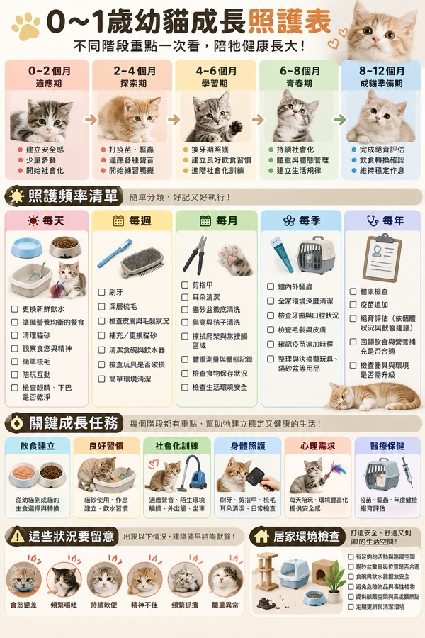

照護頻率清單每天 × 每週 × 每月 × 每季 × 每年
CAT CARE CHECKLIST
主子要照顧哪些事
主子要照顧哪些事
分成五種頻率就不亂
最近好多毛家長問我 ~ 每天、每週、每月到底要做什麼
我整理成一張表，還可以直接在這裡打勾
☀️ 每天 7 件🗓️ 每週 7 件✂️ 每月 8 件🍃 每季 6 件🩺 每年 5 件
01｜完整圖表
一張圖先看全部
點圖可以看大圖 ~ 存到手機比較好找

🔍 點一下看大圖02｜照護頻率清單
今天做了哪些 打個勾
勾選會記在你的手機裡 ~ 時間到會自動重來
這份清單大部分成貓也適用 ~ 不用一次全做到
先把每天那 7 件變成習慣，其他的慢慢加進來就好 💚
先把每天那 7 件變成習慣，其他的慢慢加進來就好 💚
03｜幼貓 0-1 歲
每個階段的重點不一樣
看看你家主子現在在哪一段
04｜關鍵成長任務
第一年要幫牠建立的六件事
打好基礎 ~ 長大後照顧起來輕鬆很多
05｜要留意的訊號
出現這些 早點問獸醫
不用自己猜 ~ 越早讓醫生看越安心
!
這件事我不能幫你判斷
上面這些狀況的原因很多，只有獸醫實際檢查才知道 ~ 我能做的是提醒你「該問了」，不是醫療建議
06｜居家環境檢查
家裡有沒有準備好
打造安全、舒適又有得玩的空間 ~ 一樣可以打勾
07｜延伸閱讀